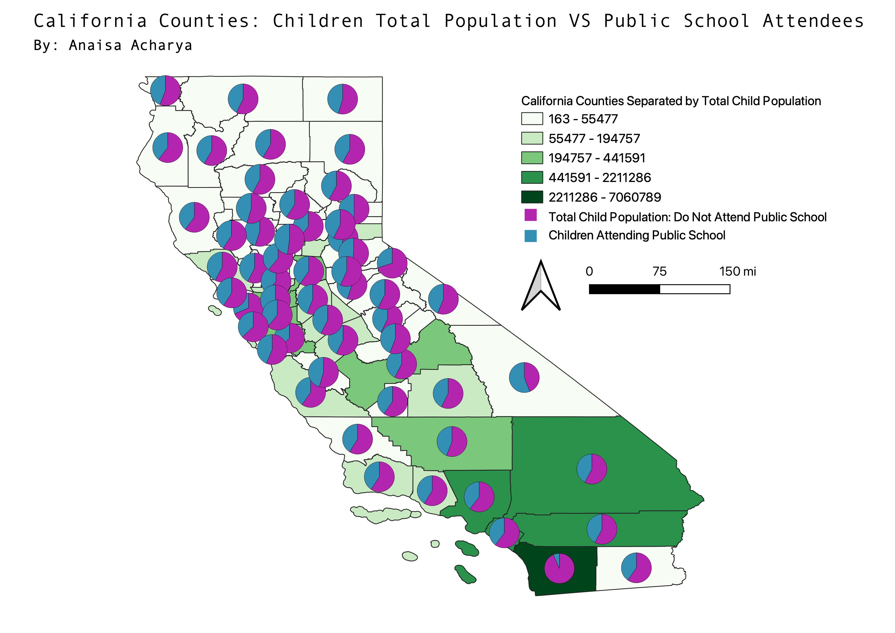

HW 7
This map focuses on the total population of children in california from ages 0-17, and approximately how many of them attend public school.
I chose this topic because coming to university, I've met many more students who have attended private school, and thought it would be interesting to compare numbers using symbols.
An important note to mention is that many kids (babies, toddlers, non-students) who may not attend school at all, could cause the symbols to look skewed.
Overall, I believe most children enrolled in school attend public school, and next time I create a dataset like this, I will add that data too!

Homework 7: CSV File
Homework 7: Geojson File
Homework 7: CSV File Site Origin